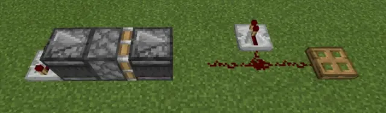
研究了一下基岩版的红石电路相关的内容，逐渐能理解一些电路运作的原理，所以写了这个专栏。
注意：
本专栏的部分内容为根据实践推出的理论，暂无游戏代码的支持。
本专栏的延迟所有分析都默认电路在一个区块内。部分内容有可能不适用于跨区块电路。
本专栏只研究常规延迟，不研究玄学现象（如无线红石），并且也不排除电路运行过程中出现不符合本专栏内容的玄学情况的可能性。
本专栏不研究红石火把的短路、烧毁、半脉冲及相关电路，也不研究漏斗运输物品的延迟。
本专栏中专有名词使用蓝色字体标出。
本专栏可能因为疏忽，出现漏洞或错误内容，如有发现欢迎评论区指出。
1. 红石系统
阅读本专栏，你首先需要了解一下基岩版的红石系统。
基岩版的红石是依赖于红石系统运作的，在这个系统中游戏储存了当前世界中的所有的红石元件及充能方块，以及它们之间的连接。
注意信号源和其他元件是直接相连的。即使在世界中它们有红石线相隔，但在红石系统中只考虑它们是否连接，而不考虑连接方式（包括：直接相连、通过红石线和/或充能方块连接）。
除了是否连接，元件之间的应有的信号衰减量也会被储存在红石系统中。
因此，红石电路运作过程中，不再依赖红石线，而是只考虑红石系统中所储存的内容。
1.1. 红石元件
红石元件分为以下几类：
生产者：就是自身发出信号的，比如红石块，拉杆等
电容器：比较器、中继器、红石火把、侦测器
传输者：红石线
消费者：就是只接受信号的，比如活塞，发射器等
2. 游戏刻
基岩版中有两种游戏刻，一般把它们称为红石刻和非红石刻（在国外它们也常被称为producer tick 和 consumer tick，但这种称呼并不准确）。我们先来了解一游戏刻内各阶段的顺序。
一游戏刻内主要的游戏阶段之间的顺序是：逐个已加载区块遍历【刷怪→随机刻→计划刻→随机计划刻→非全局实体→方块实体→红石元件变化】→村庄管理器更新→实体系统更新（如：玩家破坏方块、玩家运动、弹射物射中标靶或触发压力板按钮等等等等）→抽象计算（仅在红石刻执行）→切换红石刻与非红石刻状态→玩家操作（放置方块和其他操作）→全局实体。
中括号括起来的部分只有已加载的区块才执行。但未括起来的某些阶段也会受区块加载影响。
计划刻单区块上限100，超过的会被延迟到下一游戏刻尝试执行。使用了计划刻的元件详见下文。
随机计划刻不同于随机刻和计划刻，它也有单区块100的上限，同时也会受到randomTickSpeed的影响。火焰、珊瑚等方块使用的就是随机计划刻。
全局实体的NBT的isGlobal是1，非全局实体则为0。玩家射出的箭、扔出的三叉戟等弹射物、闪电、末影龙等等都是全局实体。全局实体阶段虽然在加载区块遍历阶段之外，但全局实体在哪些区块中会被加载在哪些区块会被卸载还有待研究（可能就是末影珍珠加载范围的问题）。
可以发现，在非全局实体阶段或全局实体阶段（取决于这个弹射物是不是全局实体），以及实体系统更新时，弹射物都会尝试触发压力板和按钮。但非弹射物只会在全局实体或非全局实体阶段（取决于这个实体是不是全局实体）尝试触发。
红石元件变化阶段的具体内容是：各种红石元件对信号做出响应。比如：中继器亮起/熄灭、活板门打开、红石粉亮灭等等。但要注意几个例外：活塞、龙首不在此阶段做出反应。
我们所说的红石刻和非红石刻，指代的其实是在这1gt中玩家操作阶段之前是不是红石刻。在红石刻有一个额外的阶段：红石系统的抽象计算。
抽象计算之所以被称为抽象计算，因为它不会对世界产生任何实际的影响，只是计算每个红石元件接受到了多少信号。
生产者一旦被触发（如拉杆被拉下、陷阱箱被打开、阳光传感器被反转），就会立即更新自己的信号。但是只有在抽象计算阶段，其他红石元件才会计算接收或者发出的信号。
抽象计算阶段内部也是有顺序的，简单来说就是：先计算红石粉和电容器，再计算消费者。后文中的中继器章节会进行更详细的解释。
或参考下图：
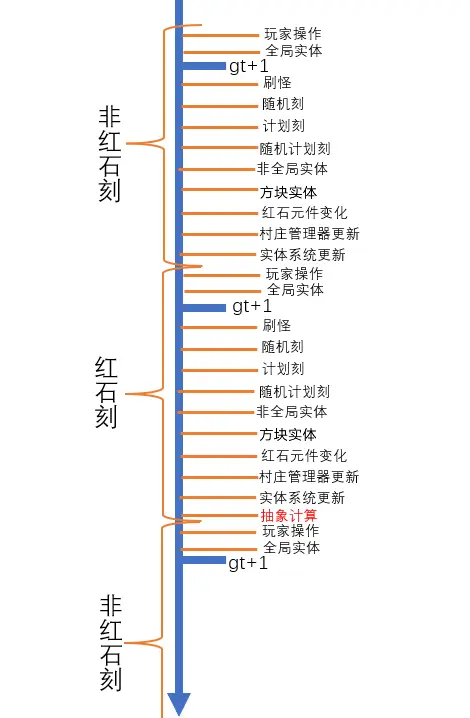
时序图
（各元件变化所在的游戏阶段见文末附录）
2.1. 实例分析一
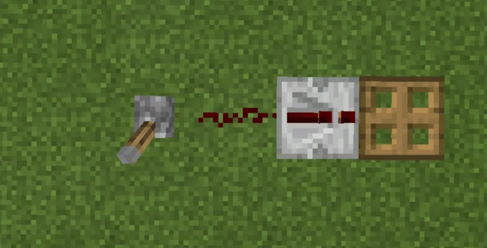
例1
如图所示，拉杆红石粉1档中继器活板门，分析拉下拉杆后的时序。
首先拉下拉杆，可能是在红石刻，也可能是在非红石刻。一旦拉下，拉杆就会发出15级信号。但要注意，只有等到抽象计算阶段，其他元件才会接收到信号。
所以之后的第一个红石刻的抽象计算阶段，首先红石粉和中继器收到了15级信号，然后活板门也收到了来自中继器的15级的信号。
下一个游戏刻的红石元件变化阶段，红石粉、中继器、活板门都发生了相应的变化（亮起或打开）。
由此可见，在这个电路中，中继器、活板门、红石粉可以说是同时对信号做出响应的。这也就是上文说p-tick和c-tick这两个称呼不准确的原因。
或参考下图：
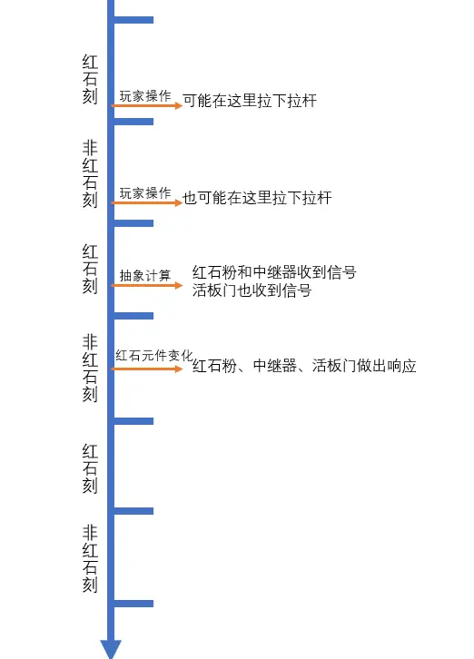
例1时序图
2.2. 实例分析二
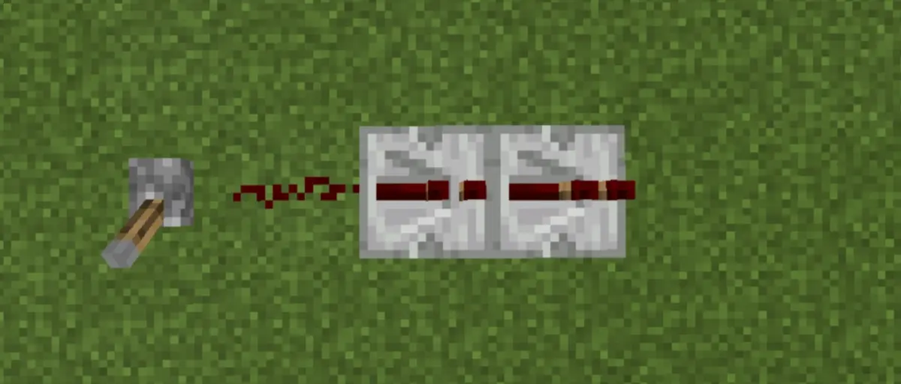
例2
如图所示，这次把实例分析一中的活板门换成1档中继器，再分析拉下拉杆后的时序。
首先和上面一样拉下拉杆。
等到之后的第一个红石刻的抽象计算阶段，红石粉和第一个中继器收到了15级信号。第二个中继器并没有接收到信号（原因可以理解为各个电容器和各个红石粉都是同时计算的，所以第二个中继器并不会等到第一个中继器接受信号之后再计算，具体原因详见后文中继器章节）。
下一个游戏刻的红石元件变化阶段，红石粉、第一个中继器都亮起。
再下一个游戏刻的抽象计算阶段，发现第二个中继器收到了15级信号。
下一个游戏刻的红石元件变化阶段，第二个中继器亮起。
由此可见，在这个电路中，第二个1档中继器与之前的活板门相比，多出了2gt的延迟。
或参考下图：
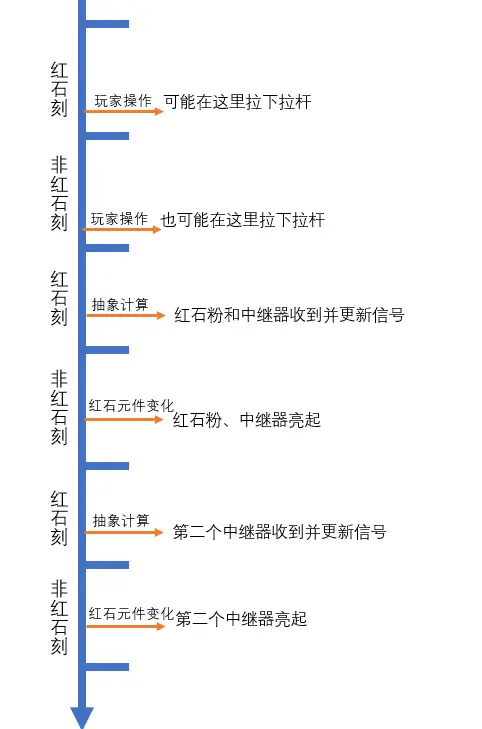
例2时序图
2.3. 实例分析三
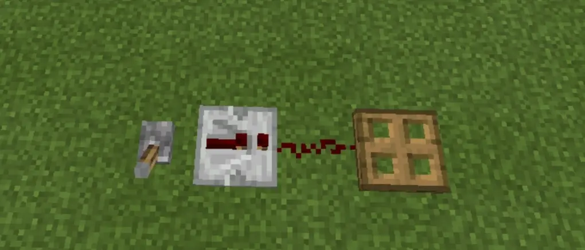
例3
如图所示，在实例分析一中的电路加上一个红石线，再分析拉下拉杆后的时序。
首先拉下拉杆，和上面一样，就不多说了。
等到之后的第一个红石刻的抽象计算阶段，中继器收到了15级信号，红石粉并没有接收到信号（原因同实例分析二中的第二个中继器）。活板门收到来自中继器的信号。
下一个游戏刻的红石元件变化阶段，中继器亮起，活板门打开。
再下一个游戏刻的抽象计算阶段，发现红石粉收到了15级信号。
下一个游戏刻的红石元件变化阶段，红石粉亮起。
红石粉在活板门的前面，但比活板门还要晚2gt。不必感到奇怪，事实就是这样。
3. 一些元件
3.1. 活塞
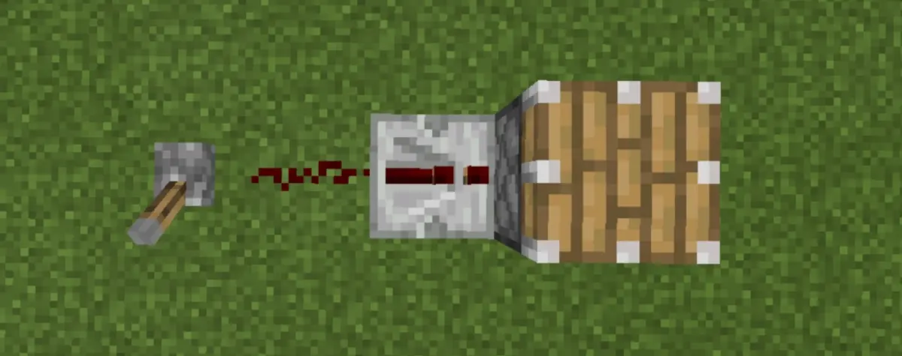
活塞
如图所示，这次把实例分析一中的活板门再换成活塞，再分析拉下拉杆后的时序。
首先拉下拉杆，和上面的实例分析一样，就不多说了。
等到之后的第一个红石刻的抽象计算阶段，红石粉和中继器收到了15级信号。然后活塞收到了来自中继器的15级信号。
下一个游戏刻的红石元件变化阶段，红石粉、中继器都亮起。
下一个游戏刻，方块实体阶段，活塞生成MB方块和MB方块实体，推出进度。
下一个游戏刻，方块实体阶段，活塞推出一半。
下一个游戏刻，方块实体阶段，活塞推出完毕，MB变回原来的方块。
时序图如下：
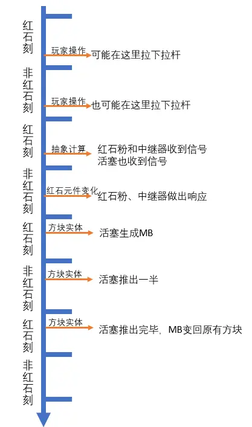
活塞时序图
由此可见，活塞生成MB相较于活板门的打开有1gt的延迟，活塞推出过程持续2gt。
活塞总是在红石刻的方块实体阶段根据接收到的信号（实际上这个信号是上一个红石刻的抽象计算阶段计算出来的），来决定是否生成MB方块。
活塞的推出或缩回的过程持续2gt。
在移动过程中，活塞不会因信号变化撤销移动（不像java版那样有瞬推）。推拉完毕后，等到下一个红石刻的方块实体阶段，活塞才会再一次判断接收到的信号。
3.2. 龙首
龙首在每个方块实体阶段（无论是不是在红石刻）根据接收到的信号（实际上这个信号是上一个红石刻的抽象计算阶段计算出来的），来改变是否播放张口动画的状态。
3.3. 侦测器
接下来看一下侦测器。
侦测器和大多数元件不同，它的亮起和熄灭是依赖于计划刻的。
当检测到方块更新时，侦测器会添加一个2gt后的计划刻事件。
但侦测器不会在非红石刻亮起，只会在红石刻亮起。2gt后如果是非红石刻，侦测器再额外计划一个1gt的计划刻。
也就是说，侦测器的延迟是2gt或3gt，一定在红石刻里亮起。
亮起后，侦测器会计划2gt用于熄灭。
不过如果是活塞推拉，在方块实体阶段推拉完毕，侦测器由MB变回方块时，侦测器就会直接亮起。亮起时依旧会添加2gt的计划刻用于熄灭。
然而，侦测器是电容器，它在亮起和熄灭时不会立即更新自身的信号，只有在抽象计算阶段才会更新自身的信号。
时序图如下：
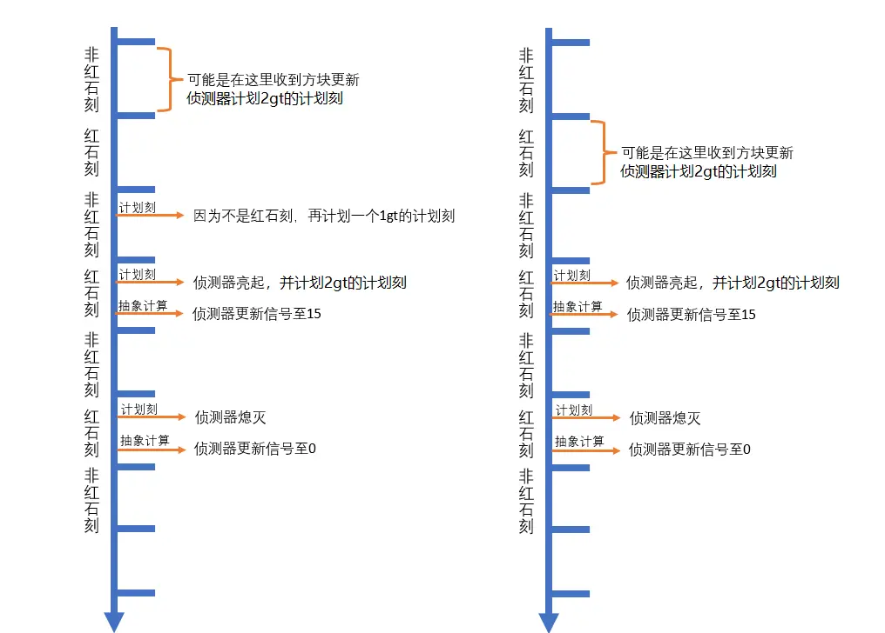
侦测器时序图
如果把活板门、红石粉和1档中继器与之相连，时序会是什么样呢？
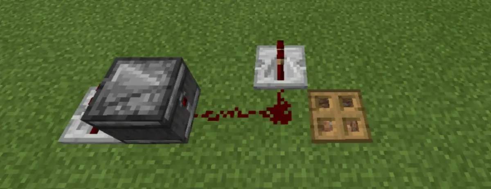
侦测器
类比之前的实例分析一和二，侦测器在红石刻亮起之后，在同一gt内的抽象计算阶段发出15级信号，然后活板门收到15级信号。
下一游戏刻，活板门打开。
下一游戏刻的抽象计算阶段，红石粉和中继器接收到信号。
下一游戏刻，红石粉和中继器亮起。
3.4. 讲台
讲台比较特殊的原因是，它会计划很多次的1gt计划刻。虽然这些过多的计划刻显得有点多此一举。
首先，讲台一定在红石刻里改变状态。
玩家在玩家操作阶段翻书，讲台会添加一个1gt后的计划刻用于亮起。1gt后如果不是红石刻就再额外添加一个1gt的计划刻。
讲台和侦测器不一样，讲台不是电容器。在计划刻亮起时，讲台信号立即改变。
在亮起时，讲台会添加一个1gt延迟的计划刻用于恢复。1gt后如果不是红石刻就再延迟1gt。
所以在一般情况下，讲台亮起后总会在2gt后恢复。
时序图如下：
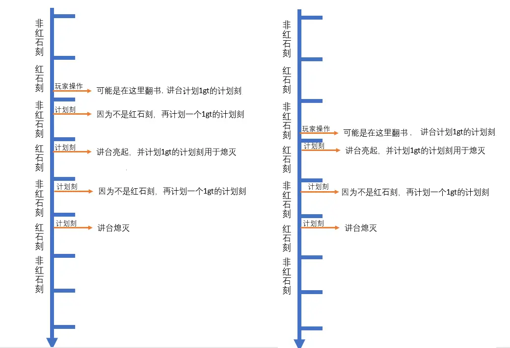
讲台时序图
3.5. 投掷器与发射器
投掷器与发射器都有激活与未激活两种状态。在红石元件变化阶段，它们会根据收到的信号更新状态。
如果此时从未激活状态转到激活状态，那么它们就会添加一个4gt的计划刻用于发射物品。4gt后的计划刻阶段，物品便被发射。
在这4gt中，它们依旧会正常根据信号切换激活与未激活状态。但即使中途信号消失而变回了未激活状态，也不会影响4gt后的物品发射。
3.6. 命令方块
循环模式命令方块会在计划刻执行命令，同时添加一个新的计划刻。延迟可以在命令方块里设置。不过你会发现设置成0和1效果是一样的。因为在计划刻执行过程中添加的0gt的计划刻效果等同于1gt的计划刻。
脉冲模式的命令方块会在红石元件变化阶段添加计划刻。延迟0和1的效果也是一样的。你可以自己想一想为什么。
连锁模式的命令方块则有所不同。如果延迟是0，那么会在指向此命令方块的那个命令方块尝试执行命令后，直接尝试执行命令而不使用计划刻。如果延迟大于0，则会添加相应的计划刻。
3.7. 其他计划刻元件
除了侦测器、讲台、发射器、投掷器、命令方块，还有其他的元件依赖于计划刻。
红石灯的亮起不是计划刻，而熄灭则是在4gt后的计划刻。
木质和石质压力板每20gt更新一次信号。当它们被压下时，信号被设为15，并添加20gt的计划刻用于更新信号。等到更新信号时，如果上面已没有实体，压力板弹起并把信号设为0；如果有实体，再次添加一个新的20gt的计划刻用于下一次更新。
测重压力板被压下后，每10游戏刻更新一次信号。
按钮由玩家按下后，在20gt（石质）或30gt（木质）后的计划刻弹起。
按钮因被箭或三叉戟射中而被触发后，每20gt（石质）或30gt（木质）更新一次信号。
绊线和绊线钩被触发后，每10游戏刻更新一次信号。
探测铁轨被矿车触发后，每20游戏刻更新一次信号。
标靶被三叉戟或箭击中，添加20gt的计划刻用于熄灭；如果被其他弹射物击中，则是8gt。如果还未熄灭，就又被新的弹射物射中，则取消掉原本的计划刻，添加一个新的计划刻。
避雷针被闪电击中，添加8gt的计划刻用于熄灭。如果还未熄灭，就又被新的闪电击中，则取消掉原本的计划刻，添加一个新的8gt的计划刻。
3.8. 实例分析
分析从拉下拉杆到活板门打开的延迟：
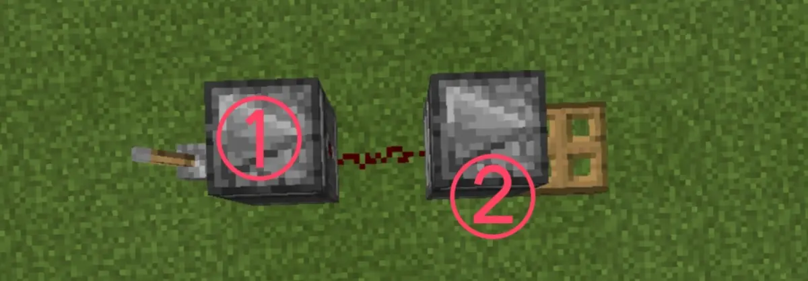
例3.8
废话不多说，直接上图：
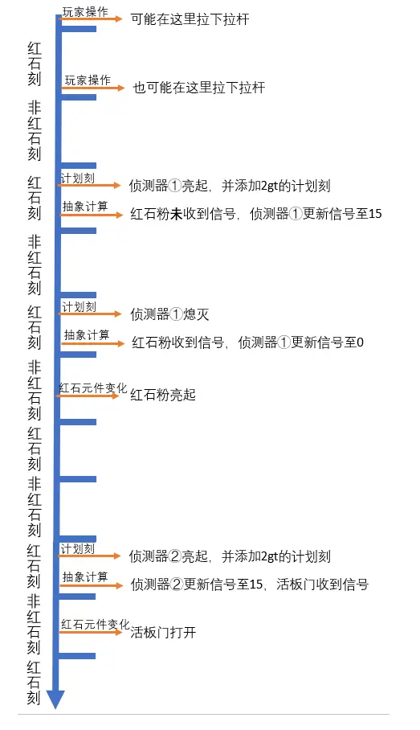
例3.8时序图
3.9. 盔甲架
盔甲架不是红石元件。但它在每个全局实体或非全局实体阶段（取决于这个实体是不是全局实体）检测红石信号，并改变姿势。
4. 中继器
4.1. 抽象计算阶段
上文说“先计算红石粉和电容器再计算消费者”，还说“可以理解为各个电容器和红石粉都是同时计算的”，但遇到电路中有多个不同档位中继器串联时，这两句无法解决所有问题。因此这里进行更详细的解释。抽象计算阶段到底做了什么：
也就是说，对于1档中继器、红石火把、比较器，在步骤1计算信号后，同1gt的步骤2就更新了信号。对于2档中继器，在步骤1计算信号后，需要等到下一个红石刻的抽象计算阶段的步骤2才会更新信号。对于3档中继器，在步骤1计算信号后，需要等到下下一个红石刻的抽象计算阶段的步骤2才会更新信号。对于4档中继器，在步骤1计算信号后，需要等到下下下一个红石刻的抽象计算阶段的步骤2才会更新信号。
如果中继器已经被锁，它就不会计算以及设置信号。
对于2、3、4档的中继器，从计算信号到设置信号之间的这一段时间里，在抽象计算阶段的步骤1不再重新计算信号。在这一段时间里，如果中继器由未被锁转变为被锁，就会重置中继器状态，取消剩余延迟，不再设置信号。
4.2. 实例分析
暂未想起合适的例子，可参考一下5.3的p-tick脉冲发生器。
5. 短脉冲分析
在国外，有人提出来过2种特殊的短脉冲：p-tick脉冲和c-tick脉冲。但当你看了这篇专栏以后，你就应该能搞清楚这两个种脉冲的原理了。
5.1. 一种c-tick脉冲发生器
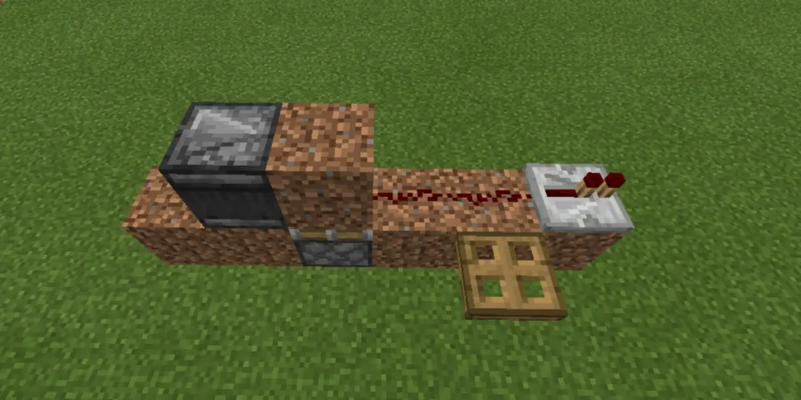
例5.1
先观察初始状态：
侦测器连接着活塞、活板门和中继器。如上文所述：在红石系统中只考虑是否连接及应有的信号衰减量，不考虑如何连接。
你应该很快就明白了，为什么活板门对输出的脉冲有反应：问这个问题就相当于问为什么活塞会推出。活板门和活塞都是与侦测器相连接的。
你也应该知道为什么中继器不会亮，可以理解为只是因为脉冲太短了。
也可以尝试分析一下具体的运作过程：
分析到这里，你就会发现，这个所谓的c-tick脉冲发生器，实际上原理如此简单。
如图所示：
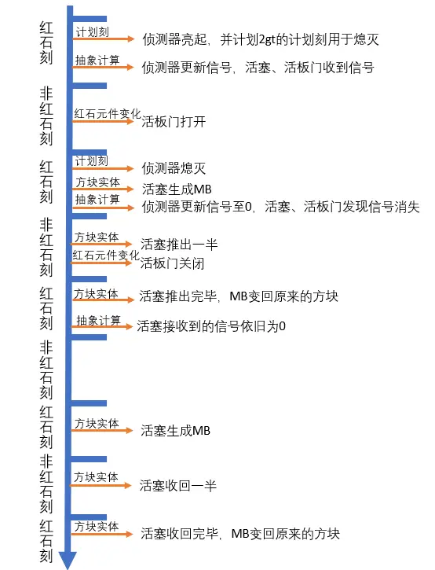
例5.1时序图
5.2. 另一种c-tick发生器
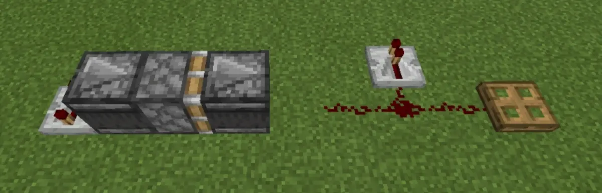
例5.2
这种发生器结构简单，直接文字分析：
这个c-tick发生器和上一个的原理是类似的，都是在中继器计算信号之前就把信号切断。因为在侦测器更新信号的同一gt，活板门就能收到信号，所以活板门能够打开。
5.3. 一种p-tick脉冲发生器
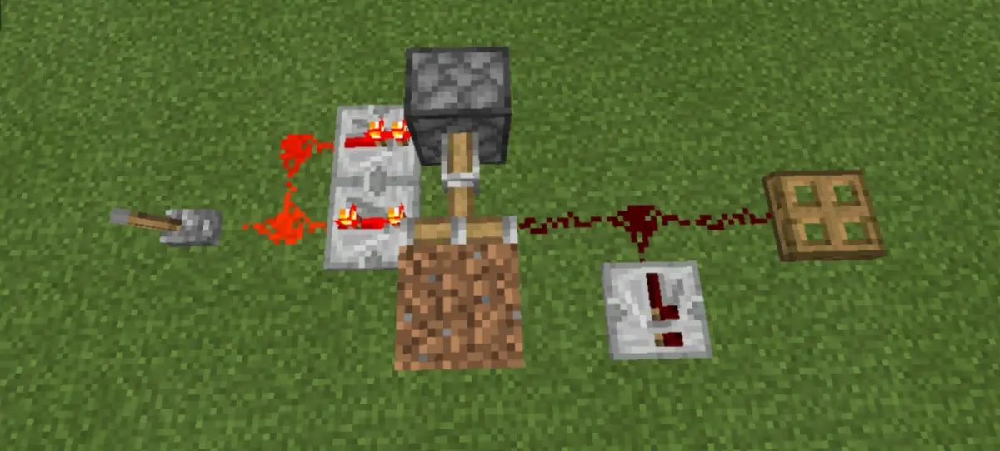
例5.3
这个发生器在输入的下降沿产生p-tick脉冲。还是先观察初始状态（有输入信号的状态）：
拉杆连接着1挡中继器①和3挡中继器②，中继器①连接着活塞。
分析一下具体的运作过程：
5.5. 两种脉冲的实质
由此可见，p-tick脉冲的实质是：在上一次抽象计算之后开始，在这一次抽象计算步骤2时结束的脉冲信号。
c-tick脉冲的实质是：在上一次抽象计算步骤2时开始，在这一次抽象计算步骤1之前就已经结束的脉冲信号。
6. 红石火把
红石火把不愧是游戏中最复杂的红石元件。mojang为它定义了很多行为：除了最基本的反转信号，还有短路（自我激活）、半脉冲（短路时发出的特殊脉冲）、烧毁、（烧毁后）检测方块更新、在将被激活的活塞上熄灭（在国外或称“软反转”）。
本专栏的主题是延迟分析，只研究红石火把的反转信号和软反转。
红石火把大体上就相当于一个1档中继器。但有以下不同之处：
第二条不必多说，但第一条就不得不提一下。看图：
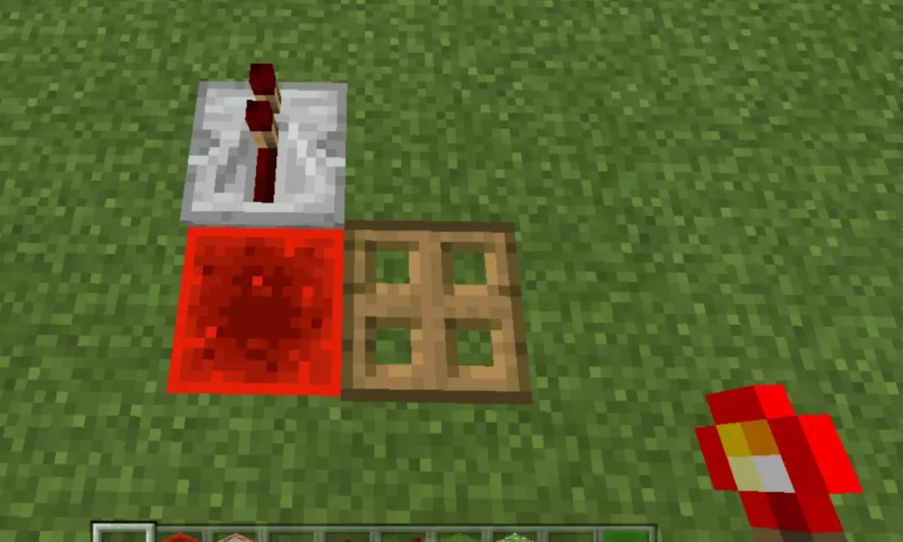
火把
在红石块上放置红石火把，为什么活板门不会打开，而中继器会亮起？
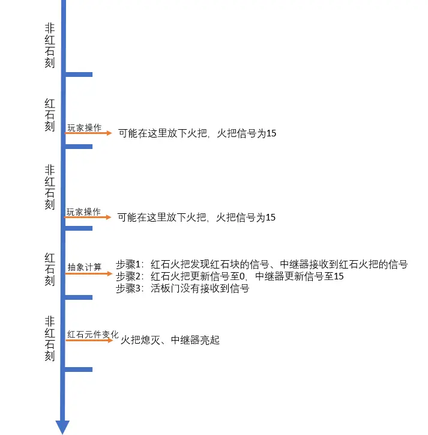
火把时序图
可以发现，火把此时发出的短脉冲正是一个p-tick脉冲。
6.1. 实例分析
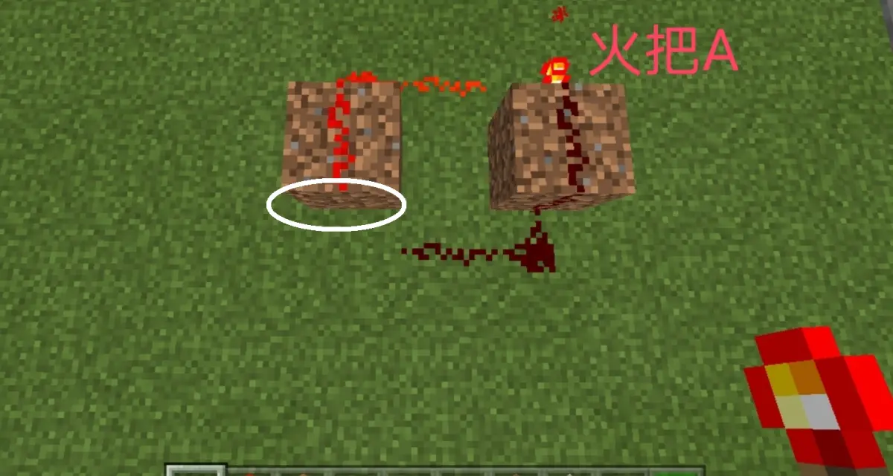
例6.1
在如图所示的地方插上一个红石火把（记为B）会怎样？
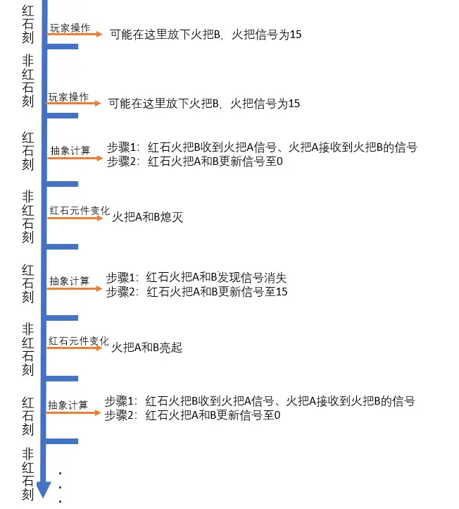
例6.1时序图
你会发现两个火把的同时亮同时灭。这很容易理解：因为放下火把时，两个火把的状态一致（都是亮起），因此之后的动作完全同步。
如下图，如果此时把信号接到另一个火把C，你会发现这火把的亮灭还是同步的。如果换成中继器，信号反而是反转的。想一想为什么。
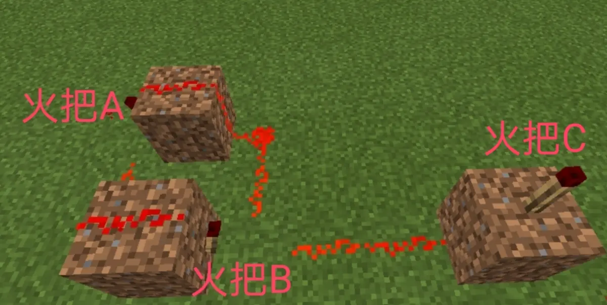
加上火把C
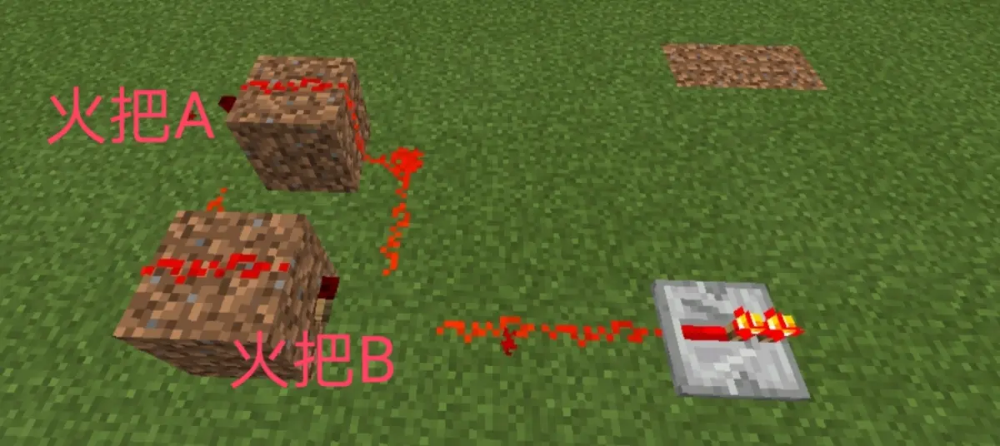
加上中继器
参考以下时序分析图：
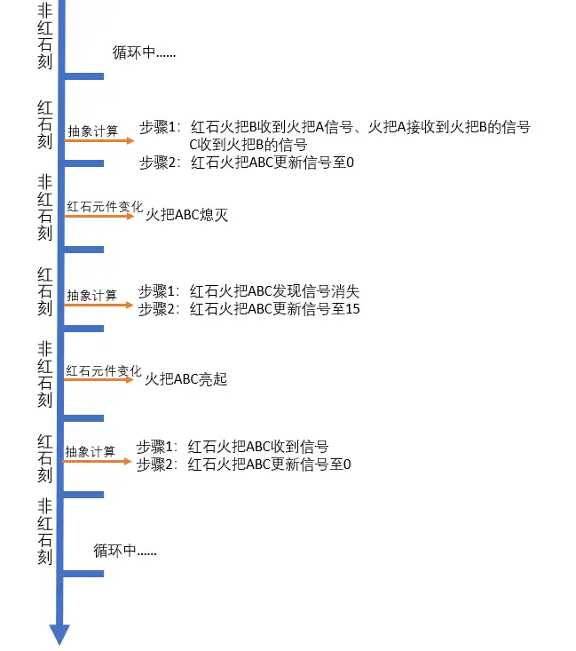
加上火把C时序图
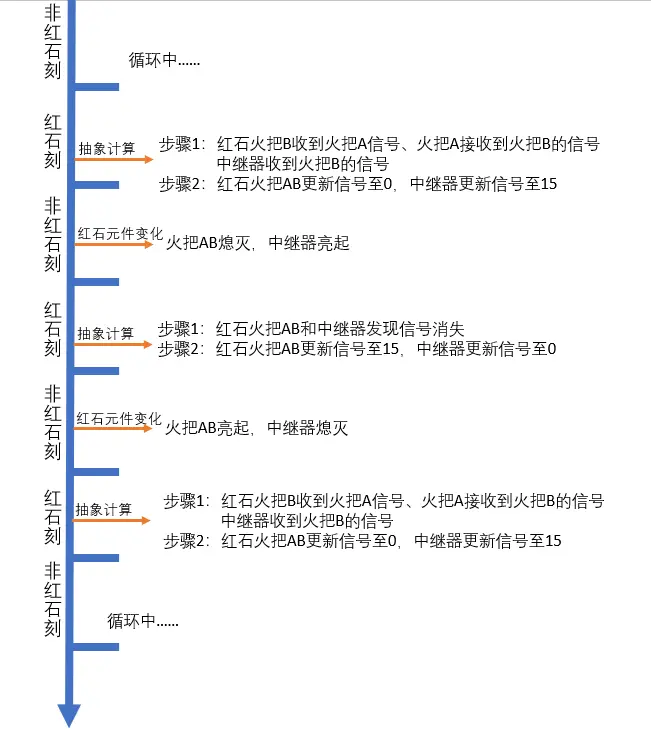
加上中继器时序图
7. 随机性
不得不注意的是，红石电路中存在着不确定性：
当涉及到活塞、漏斗或者投掷器链时，在设计机械的时候，应想办法避免这些随机性。
其实这也意味着，稳定的活塞无延迟电路或者无延迟投掷器链是完全无法实现的。
8. 结语
本专栏是对当前版本红石实际延迟行为的分析，大多数都属于游戏的未定义行为，且部分行为mojang曾多次表示属于bug且将在未来版本会修复。
基岩版红石在代码实现过程中，产生了过多的未定义行为，甚至与mojang原本的预期行为相悖。通常情况下，除非mojang承诺不会修复，这些未定义行为都应该被视为bug。
但目前看来，修复还遥遥无期，因此目前来看，理解并学会利用当前的红石机制，对红石玩家还是有很大帮助的。
附录：红石元件各种变化或计算的游戏阶段列表
红石块及其他一切元件：
按钮：
阳光传感器：
拉杆：
压力板：
探测铁轨：
陷阱箱：
绊线钩和绊线：
标靶：
避雷针：
讲台：
唱片机：
标靶：
比较器：
中继器：
红石火把：
红石粉：
侦测器：
命令方块：
漏斗：
发射器：
投掷器：
激活铁轨、充能铁轨：
门、栅栏门、活板门：
音符盒：
活塞：
红石灯：
TNT：